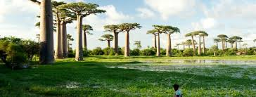

About me
Hello! I am Fy Razafimanantsoa. I am from Madagascar, I live in Antananarivo in capital of the island I am a student of BYU Idaho. I am passionate about new technology and I have the goals to learn and master coding. I plan on making a carrier in the world of Software development. What I love the most in this field is that I am able to create and develop things that can solve the problem of the world.
Project Showcase

Madagascar, located in the Indian Ocean off Africa's southeastern coast, is famous for its various landscapes. It has beautiful sandy beaches, dense rainforests filled with lemurs and other wildlife, and iconic baobab trees. The island's culture is a colorful fusion of African, Asian, and European traditions, reflected in its music, cuisine, and lively festivals. With its natural beauty and vibrant culture, Madagascar is a destination that draws visitors from all corners of the globe.